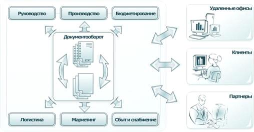
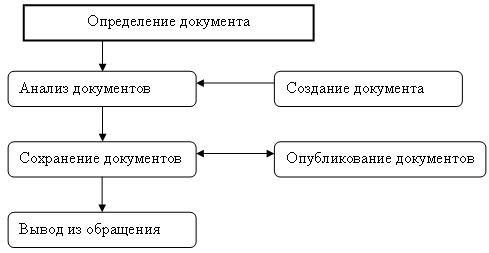
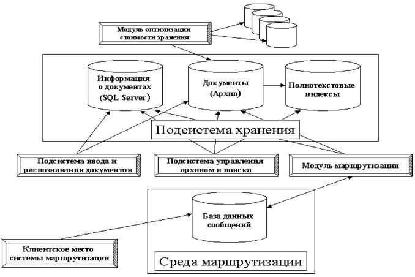

Системы электронного документооборота
Определение системы электронного документооборота и ее отличительные свойства
Класс систем электронного документооборота является подклассом документальных систем. В отличие от фактографических систем (к которым относят любой банк или базу данных) логической единицей хранения информации в документальной системе является документ.
Система электронного документооборота (ЭД, СЭД) - это комплекс программ, созданных для контролируемого создания и управления документами на предприятии в соответствии с правилами обработки документов, обусловленными бизнес процессами предприятия.
Отличительными свойствами СЭД являются:
- Ведение электронного архива документов;
- Управление жизненным циклом информации;
- Управление процессом создания, сбора, обработки и распространения корпоративной информации;
- Наличие средств контроля исполнения поручений;
- Управление содержимым корпоративных Web-ресурсов;
- Интеграция с офисными приложениями и корпоративными информационными системами.
Документированная информация (документ)- зафиксированная на материальном носителе информация с реквизитами, позволяющими ее идентифицировать.
Электронный документ - документ, в котором информация представлена в электронно-цифровой форме.
Атрибуты документов:
- установленная форма;
- носитель;
- реквизиты.
Электронный документ, как и традиционный, должен иметь все необходимые реквизиты: наименование организации, дату, регистрационный номер, должность и фамилию лица, подписавшего документ, другие. К реквизитам относят:
- регистрационный номер документа - однозначно позволяет сослаться на документ, прошедший через канцелярию;
- источник документа (контрагент) - указывает на источник получения документа;
- ответственный исполнитель документа - указывает сотрудника, которому поручено исполнение данного документа или который разработал документ (для исходящих и внутренних). Исполнитель документа всегда только один;
- дополнительные реквизиты - у конкретных предприятий разные.
Информационные ресурсы - отдельные документы и отдельные массивы документов, документы и массивы документов в информационных системах (библиотеках, архивах, фондах, банках данных, других информационных системах)
Классификация СЭД:
- Системы делопроизводства;
- Системы маршрутизации ихранения документов;
- Электронные архивы;
- Системы смешанного типа.
В некоторых исследованиях предлагают следующую типологию программ управления документами:
- электронная почта;
- программы для организации коллективной работы (Lotus Notes, например);
- программы маршрутизации документов .
К этой типологии можно было бы добавить дальнейшее разделение на:
- системы с предопределенным маршрутом;
- системы с открытым маршрутом;
- системы с поисковым блоком или полнотекстовый индексатор как самостоятельный элемент в своем собственном классе (например, Excalibur).
В то время как многие системы, основанные на использовании полнотекстовых поисковых блоков или на реляционных базах данных, претендуют на звание систем управления документами, существует множество критериев, по которым можно СЭДить о том, насколько это соответствует действительности.
Имея в виду требования к системам управления документами, такая система должна выполнять следующие функции:
- организовывать среду хранения, обеспечивая работу с бумажными и электронными документами и предоставляя возможность их просмотра;
- осуществлять поиск (полнотекстовых и других) документов;
- вести историю работы с документом, учитывая трудозатраты на его подготовку;
- обеспечивать возможность работы с многокомпонентными, многоформатными документами, а также приложениями к документу и различными его версиями;
- обеспечивать учет ассоциаций и ведение коллекций документов;
- устанавливать права на работу с документом;
- обеспечивать сканирование документа и восстановление его текста по изображению;
- обеспечивать открытый интерфейс со специализированными, национальными и другими полнотекстовыми поисковыми модулями;
- обеспечивать настройку на потребности пользователя, в первую очередь, регистрационных карточек документов.
Полный набор таких ответственных функций позволяет реализовать промышленная система управления документами.
Если продукт должен обеспечивать прохождение документов по предопределенным маршрутам, то для расширения функциональности может использоваться такой продукт как Staffware, что часто и делается в больших корпоративных системах управления документами. В том случае, когда речь идет исключительно о поддержке движения и контроля документов, выбор приложения, обеспечивающего их управление, представляется логичным. Однако иногда можно обойтись гораздо более дешевым продуктом или обычной электронной почтой.
Требования к системе электронного документооборота
Первоначально рассмотрим общие требования к системе электронного документооборота.
Масштабируемость
Желательно, чтобы система документооборота могла поддерживать любое количество пользователей, и способность системы наращивать свою мощность определялась только мощностью соответствующего аппаратного обеспечения. Выполнение такого требования может быть обеспечено с помощью поддержки индустриальных серверов баз данных производства таких компаний, как Sybase, Oracle, Informix и др., которые существуют практически на всех возможных программно-аппаратных платформах, тем самым, обеспечивая самый широкий спектр производительности.
Распределенность
Основные проблемы при работе с документами возникают в территориально-распределенных организациях, поэтому архитектура систем документооборота должна поддерживать взаимодействие распределенных площадок. Причем распределенные площадки могут объединяться самыми разнообразными по скорости и качеству каналами связи, например, офис работает по выделенной линии, пригородный склад- по сельской телефонной линии. Также архитектура системы должна поддерживать взаимодействие с удаленными пользователями.
Модульность
Вполне возможно, что заказчику может не потребоваться сразу внедрение всех компонентов системы документооборота, а иногда спектр решаемых заказчиком задач меньше, чем весь спектр задач документооборота. Тогда очевидно, что система документооборота должна состоять из отдельных модулей, интегрированных между собой.
Открытость (интегрируемость)
Система документооборота не может и не должна существовать в отрыве от других систем, например, иногда необходимо интегрировать систему с прикладной бухгалтерской программой. Тогда система документооборота должна иметь открытые интерфейсы для возможной доработки и интеграции с другими системами.
Простота ввода в действие
Система документооборота должна максимально просто вводиться в действие.
Основные свойства СЭД
Основными свойствами СЭД являются:
- открытость: все СЭД построены по модульному принципу, а их API-интерфейсы являются открытыми. Это позволяет добавлять к СЭД новые функции или совершенствовать уже имеющиеся.
- высокая степень интеграции с прикладным ПО: ключевой возможностью СЭД является высокая степень их интеграции с различными программными приложениями за счет использования технологий OLE Automation, DDE, ActiveX, ODMA, MAPI и др. А непосредственно при работе с документами вообще нет необходимости пользоваться утилитами СЭД. Пользователи имеют дело только с обычными прикладными программами: в момент инсталляции клиентской части СЭД прикладные программы дополняются новыми функциями и элементами меню;
- особенности хранения документов: СЭД работают, преимущественно, на базе распределенных архитектур и используют разнообразные комбинации технологий сбора, индексирования, хранения, поиска и просмотра электронных документов. В большинстве СЭД реализована иерархическая система хранения документов (по принципу "шкаф/полка/папка"). Количество уровней вложения при хранении документов не ограничено;
- особенности маршрутизации документов: модули СЭД, отвечающие за документооборот, принято называть модулями маршрутизации документов. В общем случае используются понятия "свободной" и "жесткой" маршрутизации документов. При "свободной" маршрутизации любой участвующий в документообороте пользователь может по своему усмотрению изменить существующий маршрут прохождения документов (или задать новый маршрут). При "жесткой" маршрутизации маршруты прохождения документов строго регламентированы, и пользователи не вправе их менять. Однако при "жесткой" маршрутизации могут обрабатываться логические операции, когда маршрут изменяется при выполнении каких-либо заранее заданных условий (например, отправке документа руководству при превышении конкретным пользователем своих должностных полномочий). В большинстве СЭД модуль маршрутизации входит в комплект поставки, в некоторых СЭД его необходимо приобретать отдельно. Полнофункциональные модули маршрутизации разрабатывают и поставляют третьи фирмы;
- разграничение доступа: в СЭД реализованы надежные средства разграничения полномочий и контроля за доступом к документам. В большинстве случаев с их помощью определяются следующие виды доступа: полный контроль над документом, право редактировать, но не уничтожать документ, право создавать новые версии документа, но не редактировать его, право аннотировать документ, но не редактировать его и не создавать новые версии, право читать документ, но не редактировать его, право доступа к карточке, но не к содержимому документа, полное отсутствие прав доступа к документу;
- наличие утилит просмотра документов разных форматов: в состав большинства СЭД входят утилиты для просмотра документов. Помимо базового комплекта утилит просмотра (входящего в каждую СЭД), у третьих фирм можно приобрести дополнительные утилиты, хорошо интегрируемые с СЭД;
- аннотирование документов: при организации групповой работы над документами обычно весьма полезна возможность их аннотирования. Так как в некоторых случаях пользователи лишены прав на внесение каких-либо изменений в документ в процессе его согласования, то они могут воспользоваться возможностью его аннотирования. В большинстве СЭД аннотирование реализуется за счет включения в карточку документа атрибута для аннотации и передачи пользователям прав на редактирование такого поля карточки. Но такое решение не всегда приемлемо (особенно при аннотировании графического документа). В связи с этим, в некоторых СЭД существует так называемая функция "красного карандаша", с помощью которой можно графически указать недостатки на самом изображении;
- поддержка различных клиентских программ: клиентами большинства СЭД могут быть ПК с ОС MS Windows. В некоторых СЭД используются также платформы UNIX и Macintosh. Кроме того, все современные СЭД позволяют работать с документами через стандартные Web-навигаторы. Так как Web-навигаторы могут быть размещены на разнообразных клиентских платформах, то это облегчает решение проблемы обеспечения работы СЭД в гетерогенных сетевых средах. При использовании Интернет-технологий у СЭД появляется еще один серверный компонент, отвечающий за доступ к документам через Web-навигаторы.
Место системы электронного документооборота в корпоративной системе управления предприятием
Место системы электронного документооборота в корпоративной системе управления предприятием показано на рисунке 6.

Рисунок 6 - Взаимодействие подсистем управления предприятием посредством СЭД. (Источник: http://www.rbcsoft.ru/ru/product/corporations/item.shtml?item_48).
Фазы жизненного цикла разработки документооборота
Модель жизненного цикла разработки документооборота фирмы по Саттону является основной из множества моделей жизненного цикла (ЖЦ). Она базируется на том, что желаемые результаты документооборота могут быть достигнуты благодаря выполнению цепочке определенных действий связанных с этапом ЖЦ документа (рис.7): на каждой фазе документу присваивается добавочная стоимость, которая определяет начальную условия следующей фазы. Все фазы ЖЦ можно разделить на части и управлять отдельно каждой. Пример: при создании документа он получил начальную стоимость. При его вводе в БД прибавилась его добавочная стоимость затрат на ввод. При его запросе и выдаче еще добавилась добавочная стоимость, документ утвердили, вновь его цена возросла.

Рисунок 7 - Фазы жизненного цикла СЭД
ЖЦ состоит из 6 фаз: определение или создание документов их анализ сохранения, публикация и вывод из обращения.
Определение документа
Имеет целью установление общего контроля проекта и структуры управления проектов, составляется план проекта, составляется все необходимые документы их тип и системные данные, то есть объем СЭД требуемой для цели организации.
На первом этапе принимается план и график работы, определяется количество сотрудников (5-7), определяются бюджетные средства, на приобретение ресурсов, то есть источников информации и инструментария.
Обосновываются необходимые работы и процедуры администрирования и управления проектом.
Анализ данных
Цель фазы: сбор информации о документах СЭД, то есть их системных данных, местах их хранения и о рабочих процессах, связанных с ЖЦ этих документов.
Результат анализа:
а) получение моделей типов документов: текст, изображение и так далее;
б) составление каталога объектов, характеризующих документ;
в) структурированная система классификации документа (по алфавитному порядку, по объему, по теме и т.д.). Система классификации файлов должна строиться с позиции направления бизнеса фирмы, а никак традиционная система, то есть распределения по отделам. Это позволяет не распределять документы при расформировании отдела. Внутренняя структура документов строится на основе форматов SGML и HTML.
Создание документа
Целями создания документа являются:
- сбор всех документов в СЭД, перевод их в формат, который работает СЭД или оцифровка. Бумажные оригиналы передаются на хранение;
- классификация всех собранных документов, по которой будет выполняться поиск, глубина ссылок до 4-5 документов.
В результате должен получится:
- полный список внешней документации компании;
- полный список, наследованных от старой системы, документов;
- полный список, авторами, которых являются сотрудники.
Замечание на этом этапе - один и тот же документ не должен дублироваться в разных секторах памяти. Сбору подлежит только информация, имеющая отношение к бизнес-направлению компании. Оставление всей информации от старой системы по принципу «пусть будет» нерационально использует память СЭД.
Сохранение документов
Цель фазы: поместить документы в безопасную среду, хранить в ней, с возможностью всегда их найти.
При сохранении документы классифицируют на уровне секретности: общие, частные, конфиденциальные, секретно и совершенно секретно. При сохранении следует предусмотреть подлинность электронного почты, авторизации (установление подлинности автора) и установление аудиторской проверки документов, защищенных СЭД.
Опубликование документов
Цель: распределение электронных версий и распечаток документов среди работников организации, в соответствии с их уровнем доступа - ИРИ (избирательное распространенная информация).
Результат фазы: составление уровня допуска и списков распределения документа согласно допусков к этим документов. Установление диапазона форматов установления и распечаток документов.
Система ИРИ автоматически уведомляет пользователя о поступлении документа в репозиторий нового документа, который предоставляет интерес для направления работы пользователя и его группы допуска. Например: бухгалтер получает о новых бухгалтерских правилах и так далее.
Вывод документов из обращения
Цель: определить документ, подлежащие выводу из СЭД. Выполняется 4-мя способами: уничтожение, сохранение, отчуждение, перевод в архив.
Уничтожение - физическая документация документов (для бумажных - сжигание и др.)
Сохранение - копирование компакт-диска или магнитного диска в тех случаях, когда записанные на них документы могут понадобиться после истечения их срока годности (5-7 лет). До 15% старых документов могут быть запрошены, по статистике.
Отчуждение - пересылка документаций тем организациям, откуда они были первоначально получены для СЭД.
Перевод в архив - выполняется для документов, представляющих интерес с точки зрения истории организации.
Резульат фазы: обновленных график сохранения документации; список документов о сохранении, список для уничтожения и список документов для отсылки. Перед уничтожением документа или перед переводом в другую категорию нужно уведомить автора, так как только он может знать истинную потребности документа.
Структура документа
Шаблон - макет документа, в который заранее внесены значения постоянных реквизитов и создаются трафареты для переменных реквизитов. Шаблоны для бумажных носителей - бланки, для форм. Бланки бывают:
- Общие бланки - для приказов, распоряжений, решений;
- Бланки для писем.
Заголовочный реквизит в шаблонах могут располагаться по центру (заявление, приказ) или по углам слева - адресная часть, с право - графическая печать. Проекты исходящих документов, то есть их содержание, тексты готовятся в структурных подразделениях. Согласование - это ознакомление, заинтересованного лица и добавлением грифа.
Основные операции составления документа:
- Составление шаблона документа и хранения его в базе;
- Разработка проекта документа;
- Поиск шаблона и составление его реквизитов;
- Выдача на печать;
- Согласование проекта документа;
- Редактирование и корректирование документа;
- Печать и подписание документа;
- Утверждение документа руководством;
- Размножение документа;
- Регистрация рассылки документа.
Формализованные документы - типовые и стандартные документы, характеризующие следующие свойства:
- Наличие типового состава реквизитов;
- Наличие типовых реквизитов по колонкам и соподчиненности;
- Стандартное оформление или реквизитов;
- Использование бумаги стандартных размеров (А4, А3, А5).
Неформализованный документ - отличается нестандартным содержанием и от типовой формы расположения реквизитов (отчеты, обзоры, реферат).
Основные особенности:
- Малое количество типовых реквизитов;
- Многостраничные расположения содержательной части документа;
- Страницы могут содержать текстовую, табличную и графическую информацию;
- Текстовая часть может быть структурной в виде абзацев или колонок.
В состав документов может входить: оглавление, предметный указатель, колонтитулы, сноски.
Основные операции для неформализованного документа:
- Ввод текста с текущей корректировкой ;
- Орфографическая проверка текста;
- Операция подстановки страниц;
- Вставка сносок;
- Вставка предметного указателя;
- Вставка колонтитулы ;
- Изменение стилей и шрифтов;
- Составление оглавления;
- Печать;
- Согласование и редактирование;
- Копирование;
- Утверждение и рассылка документа.
На рис.8 приведена типичная структура СЭД.

Рисунок 8 - Структура СЭД
В основе системы документооборота лежит подсистема хранения. В простейшем случае это может быть база данных учета документов в системах автоматизации делопроизводства. Клиентское рабочее место осуществляет возможность занесения информации о документах в систему, поиск документов по их атрибутам, модификацию информации (текущее местоположение, статус исполнения и прочее) и управление данными.
В том случае, если система документооборота хранит документы или их образы, необходима специальная среда их хранения. В простейшем случае для этого может использоваться файловая система. В более сложном случае это может быть специализированная система построения архива документов. База данных должна содержать информацию о правах доступа к документам, блокировках и пр. В этом случае возможно присутствие систем оптимизации хранения документов и системы поддержки полнотекстового индексирования.
Клиентские приложения, соответственно, должны включать такие дополнительные функции, как доступ к документам в архиве, поддержка блокировки и изменения атрибутов документов, а также возможность полнотекстового поиска.
Для ввода документов в систему может использоваться система распознавания текстов и печатных форм.
В случае наличия в системе средств маршрутизации база данных хранит дополнительную информацию о маршрутах движения документов, текущем состоянии маршрутов и пр. Модуль маршрутизации осуществляет непосредственную доставку документов на рабочие места пользователей и внесение информации об изменении статуса документов в базу данных. Клиентское рабочее место системы маршрутизации может непосредственно не взаимодействовать с базой данных и архивом документов, а получать доступ к документам посредством среды маршрутизации, в качестве которой может использоваться электронная почта.
План внедрения СЭД
После выбора платформы для автоматизации документооборота и комплекса интегрированных приложений на ее базе, составляется бизнес- проект с оценкой затрат, оценкой экономии и выгоды, оценкой рисков и рекомендациями временных рамок и плана действий, направленных на организацию проекта разработки СЭД.
Приведем здесь краткий алгоритм (план) действий на различных этапах осуществления проекта разработки СЭД, базирующийся на основных вехах.
План действий, который предлагается в этой работе состоит, из трех четко разделенных групп этапов:
1 этап. Первоначальные этапы запуска проекта:
-подбор команды, организация административных процессов;
- разработка стратегии развертывания;
- установка аппаратного и программного обеспечения и сети;
- согласование, настройка приложений и платформы СЭД;
- указание затрагиваемых СЭД направлений политики компании и процессов;
- разработка стандартов оценки проекта СЭД.
2 этап. Стадии внесения изменений в управление организацией:
- разработка коммуникативной стратегии и подбор рабочих групп;
- пересмотр процесса ведения дел.
3. Стадии разрешения проблем, возникающих по ходу развертывания СЭД:
- конвертация в новый формат и перенос в систему унаследованных документов и файлов данных;
- проведение специального обучения сотрудников;
- оценка проекта СЭД;
- завершение проекта.
Проблемы внедрения СЭД
Проблемы внедрения СЭД:
- Неинформированность руководителей о продуктах СЭД;
- Расхождение с реальной оргструктурой и бизнес-процессами);
- Психологические проблемы (СЭД - «контролёр»);
- Отсутствия электронных навыков у большинства из старых кадров.
Помимо указанных, существуют и другие, не менее серьезные препятствия для внедрения данных систем на предприятиях. Иначе их можно интерпретировать так:
- консерватизм персонала;
- отсутствие поддержки внедрения со стороны первого лица организации;
- сложность формализации структуры и бизнес-процессов;
- отсутствие корпоративной культуры работы с документами и хоть какой-то формализации документооборота;
- сложность оценки эффекта от внедрения системы электронного документооборота.
Примеры систем электронного документооборота
Сферы применение СЭД огромны.
На данный момент существующие на рынке системы, основываясь на технологиях, лежащих в их основе, можно условно разделить на три группы:
а) Системы западного производства. Среды разработок.
б) Системы локального (Россия, Украина) производства, в основе которых лежит Lotus Domino/Notes.
в) Полностью локальные разработки.
К первой группе относят такие три западные системы (среды разработок):
- Documentum ;
- DOCSOpen/DOCSFusion ;
- Lotus Domino.Doc .
При этом на данный момент наиболее активны по количеству внедрений на рынке системы Documentum и DOCSOpen/DOCSFusion. Эти системы, в - основном, предназначены для крупных предприятий.
Ко второй группе можно отнести следующие компании и системы:
- CompanyMedia - ИнтерТраст ;
- OfficeMedia - ИнтерТраст ;
- БОСС-Референт - АйТи ;
- ЗОЛУШКА НТЦ - ИРМ ;
- Эскадо Интерпроком - ЛАН .
Следует отметить, что системы, основанные на Lotus Domino/Notes, довольно популярны в России. Это доказывают их многочисленные внедрения, а сами компании являются лидерами в своих сегментах, большинство внедрений данных систем было успешным. Хотя, если компания уже имеет разветвленную информационную структуру, основанную на других технологиях, то переход на Lotus связан с некоторыми проблемами. Тем не менее, задача интеграции системы на Lotus Domino/Notes с существующими системами выполнима.
Системы, которые можно отнести к третьей группе:
- 1C:Архив - 1C ;
- RBC Docs - РБК СОФТ ;
- DocsVision - Digital Design ;
- IIG Intravert - IIG ;
- IT -Inco - IncoFlow ;
- LanDocs - Ланит ;
- Optima-WorkFlow - Optima ;
- VisualDoc - ЦентрИнвест Софт ;
- Гран Док - Гранит ;
- Дело - ЭОС ;
- ДокМенеджер - СофтИнтегро ;
- Евфрат Cognitive - Technologies ;
- Эффект-Офис ИКК - Гарант Интернэшнл.